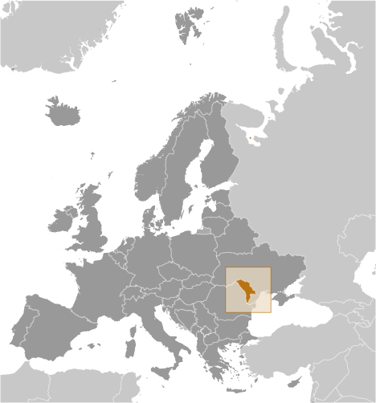
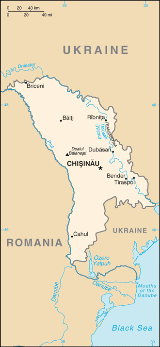
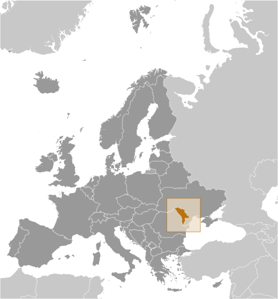
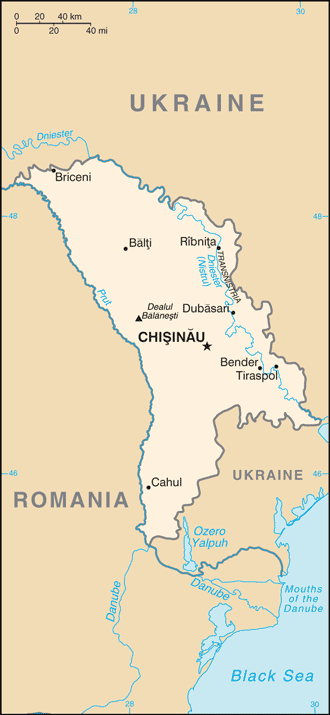

Europe :: MOLDOVA
Introduction :: MOLDOVA
-
Part of Romania during the interwar period, Moldova was incorporated into the Soviet Union at the close of World War II. Although the country has been independent from the USSR since 1991, Russian forces have remained on Moldovan territory east of the Nistru River supporting the breakaway region of Transnistria, composed of a Slavic majority population (mostly Ukrainians and Russians), but with a sizable ethnic Moldovan minority. Europe's poorest economy, Moldova became the first former Soviet state to elect a communist, Vladimir VORONIN, as its president in 2001. VORONIN served as Moldova's president until he resigned in September 2009. Four Moldovan opposition parties then formed a new coalition, the Alliance for European Integration (AEI), iterations of which acted as Moldova's governing coalitions over the next several years. In May 2013, two of the original AEI parties and a splinter group from a third re-formed a ruling coalition called the Pro-European Coalition. The Moldovan Government in summer 2014 signed and ratified an Association Agreement with the EU, advancing the Coalition's policy priority of EU integration. Following the country's most recent legislative election in November 2014, the three pro-European parties that entered Parliament won a total of 55 of the body's 101 seats. Infighting among coalition members led to prolonged legislative gridlock and political instability, as well as the collapse of two governments, all ruled by pro-European coalitions centered around the Liberal Democratic Party (PLDM) and the Democratic Party (PDM). A political impasse ended in January 2016 when a new parliamentary majority led by PDM, joined by defectors from the Communists and PLDM, supported Pavel FILIP as prime minister.
Geography :: MOLDOVA
-
Eastern Europe, northeast of Romania47 00 N, 29 00 EEuropetotal: 33,851 sq kmland: 32,891 sq kmwater: 960 sq kmcountry comparison to the world: 140slightly larger than Marylandtotal: 1,885 kmborder countries (2): Romania 683 km, Ukraine 1,202 km0 km (landlocked)none (landlocked)moderate winters, warm summersrolling steppe, gradual slope south to Black Seamean elevation: 139 melevation extremes: lowest point: Dniester (Nistru) 2 mhighest point: Dealul Balanesti 430 mlignite, phosphorites, gypsum, limestone, arable landagricultural land: 74.9%arable land 55.1%; permanent crops 9.1%; permanent pasture 10.7%forest: 11.9%other: 13.2% (2011 est.)2,283 sq km (2012)pockets of agglomeration exist throughout the country, the largest being in the center of the country around the capital of Chisinau, followed by Tiraspol and Baltilandslidesheavy use of agricultural chemicals, including banned pesticides such as DDT, has contaminated soil and groundwater; extensive soil erosion from poor farming methodsparty to: Air Pollution, Air Pollution-Persistent Organic Pollutants, Biodiversity, Climate Change, Climate Change-Kyoto Protocol, Desertification, Endangered Species, Hazardous Wastes, Ozone Layer Protection, Ship Pollution, Wetlandssigned, but not ratified: none of the selected agreementslandlocked; well endowed with various sedimentary rocks and minerals including sand, gravel, gypsum, and limestone
People and Society :: MOLDOVA
-
3,510,485 (July 2016 est.)country comparison to the world: 133noun: Moldovan(s)adjective: MoldovanMoldovan 75.8%, Ukrainian 8.4%, Russian 5.9%, Gagauz 4.4%, Romanian 2.2%, Bulgarian 1.9%, other 1%, unspecified 0.4% (2004 est.)note: internal disputes with ethnic Slavs in the Transnistrian regionMoldovan 58.8% (official; virtually the same as the Romanian language), Romanian 16.4%, Russian 16%, Ukrainian 3.8%, Gagauz 3.1% (a Turkish language), Bulgarian 1.1%, other 0.3%, unspecified 0.4% (2004 est.)note: represents language usually spokenOrthodox 93.3%, Baptist 1%, other Christian 1.2%, other 0.9%, atheist 0.4%, none 1%, unspecified 2.2% (2004 est.)0-14 years: 18.03% (male 326,244/female 306,543)15-24 years: 12.87% (male 233,694/female 218,189)25-54 years: 43.55% (male 768,933/female 760,002)55-64 years: 13.36% (male 214,852/female 254,224)65 years and over: 12.19% (male 165,811/female 261,993) (2016 est.)total dependency ratio: 34.6%youth dependency ratio: 21.2%elderly dependency ratio: 13.4%potential support ratio: 7.5% (2015 est.)total: 36.3 yearsmale: 34.5 yearsfemale: 38.3 years (2016 est.)country comparison to the world: 71-1.04% (2016 est.)country comparison to the world: 23111.8 births/1,000 population (2016 est.)country comparison to the world: 16912.6 deaths/1,000 population (2016 est.)country comparison to the world: 19-9.5 migrant(s)/1,000 population (2016 est.)country comparison to the world: 215pockets of agglomeration exist throughout the country, the largest being in the center of the country around the capital of Chisinau, followed by Tiraspol and Baltiurban population: 45% of total population (2015)rate of urbanization: -0.73% annual rate of change (2010-15 est.)CHISINAU (capital) 725,000 (2015)at birth: 1.06 male(s)/female0-14 years: 1.06 male(s)/female15-24 years: 1.07 male(s)/female25-54 years: 1.01 male(s)/female55-64 years: 0.85 male(s)/female65 years and over: 0.62 male(s)/femaletotal population: 0.95 male(s)/female (2016 est.)24 (2013 est.)23 deaths/100,000 live births (2015 est.)country comparison to the world: 114total: 12.3 deaths/1,000 live birthsmale: 14.1 deaths/1,000 live birthsfemale: 10.3 deaths/1,000 live births (2016 est.)country comparison to the world: 118total population: 70.7 yearsmale: 66.9 yearsfemale: 74.8 years (2016 est.)country comparison to the world: 1541.56 children born/woman (2016 est.)country comparison to the world: 18867.8% (2005)10.3% of GDP (2014)country comparison to the world: 82.98 physicians/1,000 population (2013)6.2 beds/1,000 population (2012)improved:urban: 96.9% of populationrural: 81.4% of populationtotal: 88.4% of populationunimproved:urban: 3.1% of populationrural: 18.6% of populationtotal: 11.6% of population (2015 est.)improved:urban: 87.8% of populationrural: 67.1% of populationtotal: 76.4% of populationunimproved:urban: 12.2% of populationrural: 32.9% of populationtotal: 23.6% of population (2015 est.)0.64% (2015 est.)country comparison to the world: 6018,000 (2015 est.)country comparison to the world: 81800 (2015 est.)country comparison to the world: 7215.7% (2014)country comparison to the world: 912.2% (2012)country comparison to the world: 1117.5% of GDP (2014)country comparison to the world: 10definition: age 15 and over can read and writetotal population: 99.4%male: 99.7%female: 99.1% (2015 est.)total: 12 yearsmale: 12 yearsfemale: 12 years (2013)total number: 72,364percentage: 16% (2009 est.)total: 9.8%male: 9.6%female: 10.2% (2014 est.)country comparison to the world: 87
Government :: MOLDOVA
-
conventional long form: Republic of Moldovaconventional short form: Moldovalocal long form: Republica Moldovalocal short form: Moldovaformer: Moldavian Soviet Socialist Republic, Moldovan Soviet Socialist Republicetymology: named for the Moldova River in neighboring eastern Romaniaparliamentary republicname: Chisinau in Romanian (Kishinev in Russian)note: pronounced KEE-shee-now (KIH-shi-nyov)geographic coordinates: 47 00 N, 28 51 Etime difference: UTC+2 (7 hours ahead of Washington, DC, during Standard Time)daylight saving time: +1hr, begins last Sunday in March; ends last Sunday in October32 raions (raioane, singular - raion), 3 municipalities (municipii, singular - municipiul), 1 autonomous territorial unit (unitatea teritoriala autonoma), and 1 territorial unit (unitatea teritoriala)raions: Anenii Noi, Basarabeasca, Briceni, Cahul, Cantemir, Calarasi, Causeni, Cimislia, Criuleni, Donduseni, Drochia, Dubasari, Edinet, Falesti, Floresti, Glodeni, Hincesti, Ialoveni, Leova, Nisporeni, Ocnita, Orhei, Rezina, Riscani, Singerei, Soldanesti, Soroca, Stefan-Voda, Straseni, Taraclia, Telenesti, Unghenimunicipalities: Balti, Bender, Chisinauautonomous territorial unit: Gagauziaterritorial unit: Stinga Nistrului (Transnistria)27 August 1991 (from the Soviet Union)Independence Day, 27 August (1991)history: previous 1978; latest adopted 29 July 1994, effective 27 August 1994amendments: proposed by voter petition (at least 200,000 eligible voters), by one-third of Parliament members, or by the government; passage requires two-thirds majority vote of Parliament within one year of initial proposal; revisions to constitutional articles on sovereignty, independence, and neutrality require majority vote by referendum; articles on fundamental rights and freedoms cannot be amended; amended several times, last in 2010; note – in early 2016, a Moldovan Constitutional Court decision allowed for direct presidential elections, reversing a constitutional amendment allowing Parliament to select the president (2016)civil law system with Germanic law influences; Constitutional Court review of legislative actshas not submitted an ICJ jurisdiction declaration; accepts ICCt jurisdictioncitizenship by birth: nocitizenship by descent only: at least one parent must be a citizen of Moldovadual citizenship recognized: noresidency requirement for naturalization: 10 years18 years of age; universalchief of state: President Nicolae TIMOFTI (since 23 March 2012)head of government: Prime Minister Pavel FILIP (since 20 January 2016)cabinet: Cabinet proposed by the prime minister-designate, nominated by the president, approved through a vote of confidence in Parliamentelections/appointments: president directly elected for a 4-year term (eligible for a second term); election last held on 13 November 2016 (next to be held in fall 2020); prime minister designated by the president upon consultation with Parliament; within 15 days from designation, the prime minister-designate must request a vote of confidence for his/her proposed work program from the Parliamentelection results: Igor DODON elected president; percent of vote - Igor DODON (Socialist Party) 52.2%, Maia SANDU (Action and Solidarity Party) 47.8%; Pavel FILIP (Democratic Party) designated prime minister; Parliament vote - 57 of 101; note - Igor DODON will assume office after the Constitutional Court validates the election resultsdescription: unicameral Parliament (101 seats; members directly elected in a single, nationwide constituency by proportional representation vote to serve 4-year terms)elections: last held on 30 November 2014 (next to be held in November 2018)election results: percent of vote by party - PSRM 20.5%, PLDM 20.2%, PCRM 17.5%, PDM 15.8%, PL 9.7%, other 16.3%; seats by party - PSRM 25, PLDM 23, PCRM 21, PDM 19, PL 13highest court(s): Supreme Court of Justice (consists of a chief judge, 3 deputy-chief judges, 45 judges, and 7 assistant judges); Constitutional Court (consists of the court president and 6 judges); note - the Constitutional Court is autonomous to the other branches of government; the Court interprets the Constitution and reviews the constitutionality of parliamentary laws and decisions, decrees of the president, and acts of the governmentjudge selection and term of office: Supreme Court of Justice judges appointed by Parliament upon the recommendation of the Supreme Council of the Magistracy; all judges serve 4-year renewable terms; Constitutional Court judges appointed 2 each by Parliament, the Moldovan president, and the Higher Council of Magistracy; court president elected by other court judges for a 3-year term; other judges appointed for 6-year termssubordinate courts: Courts of Appeal; Court of Business Audit; municipal courtsrepresented in Parliament:Communist Party of the Republic of Moldova or PCRM [Vladimir VORONIN]Democratic Party of Moldova or PDM [Marian LUPU]Liberal Democratic Party of Moldova or PLDM [Valeriu STRELET, acting]Liberal Party or PL [Mihai GHIMPU]Socialist Party of the Republic of Moldova or PSRM [Zinaida GRECEANII, acting]not represented in Parliament:Action and Solidarity Party or PAS [Maia SANDU]Anti-Mafia Movement or MPA [Sergiu MOCANU]Centrist Union of Moldova or UCM [Mihai PETRACHE]Christian Democratic People's Party or PPCD [Iurie ROSCA]Conservative Party or PC [Natalia NIRCA]Democracy at Home Party or PPDA [Vasile COSTIUC]Democratic Action Party or PAD [Mihai GODEA]Dignity and Truth Platform or PDA [Andrei NASTASE]Ecologist Green Party or PVE [Anatolie PROHNITCHI]European People’s Party of Moldova or EPPM [Iurie LEANCA]Popular Democratic Party of Moldova or PPDM [Valeriu PASAT]Labor Party or PM [Marcel DARIE]Liberal Reformers Party or PLR [Ion HADARCA]“Motherland” Party or PP [Emilian CIOBU]National Liberal Party or PNL [Vitalia PAVLICENKO]Our Home Moldova or PCNM [Grigore PETRENCO]Our Party or PN [Renato USATII]People’s Party of Moldova or PPRM [Alexandru OLEINIC]Progressive Society Party or PSP [Oleg MATVEI]Regions Party of Moldova or PRM [Alexandr KALININ]“Right” Party or PD [Ana GUTU]Russian-Slavean Party of Moldova or PRSM [Oleg TOPOLNITKI]Shor Party or PS [Ilan SHOR]Social Democratic Party or PSD [Victor SELIN]Social-Political Movement “New Force” or MFN [Valeriu PLESCA]Socialist People’s Party of Moldova or PPSM [Victor STEPANIUC]United Moldova Party or PMUEM [Vladimir TURCAN]NABSEC, CD, CE, CEI, CIS, EAEC (observer), EAPC, EBRD, FAO, GCTU, GUAM, IAEA, IBRD, ICAO, ICC (NGOs), ICCt, ICRM, IDA, IFAD, IFC, IFRCS, ILO, IMF, IMO, Interpol, IOC, IOM, IPU, ISO (correspondent), ITU, ITUC (NGOs), MIGA, OIF, OPCW, OSCE, PFP, SELEC, UN, UNCTAD, UNESCO, UNHCR, UNIDO, Union Latina, UNMIL, UNMISS, UNOCI, UNWTO, UPU, WCO, WHO, WIPO, WMO, WTOchief of mission: Ambassador (vacant); Charge d'Affaires Veaceslav PITUSCAN (since 26 August 2015)chancery: 2101 S Street NW, Washington, DC 20008telephone: [1] (202) 667-1130FAX: [1] (202) 667-1204chief of mission: Ambassador James D. PETTIT (since 29 January 2015)embassy: 103 Mateevici Street, Chisinau MD-2009mailing address: use embassy street addresstelephone: [373] (22) 40-8300FAX: [373] (22) 23-3044three equal vertical bands of blue (hoist side), yellow, and red; emblem in center of flag is of a Roman eagle of gold outlined in black with a red beak and talons carrying a yellow cross in its beak and a green olive branch in its right talons and a yellow scepter in its left talons; on its breast is a shield divided horizontally red over blue with a stylized aurochs head, star, rose, and crescent all in black-outlined yellow; based on the color scheme of the flag of Romania - with which Moldova shares a history and culture - but Moldova's blue band is lighter; the reverse of the flag does not display any coat of armsnote: one of only three national flags that differ on their obverse and reverse sides - the others are Paraguay and Saudi Arabiaaurochs (a type of wild cattle); national colors: blue, yellow, redname: "Limba noastra" (Our Language)lyrics/music: Alexei MATEEVICI/Alexandru CRISTEAnote: adopted 1994
Economy :: MOLDOVA
-
Despite recent progress, Moldova remains one of the poorest countries in Europe. With a moderate climate and productive farmland, Moldova's economy relies heavily on its agriculture sector, featuring fruits, vegetables, wine, and tobacco. Moldova also depends on annual remittances of about $1.12 billion from the roughly one million Moldovans working in Europe, Russia, and other former Soviet Bloc countries.With few natural energy resources, Moldova imports almost all of its energy supplies from Russia and Ukraine. Moldova's dependence on Russian energy is underscored by a more than $5 billion debt to Russian natural gas supplier Gazprom, largely the result of unreimbursed natural gas consumption in the breakaway region of Transnistria. Moldova and Romania inaugurated the Ungheni-Iasi natural gas interconnector project in August 2014. The 43-kilometer pipeline between Moldova and Romania, allows for both the import and export of natural gas. Several technical and regulatory delays kept gas from flowing into Moldova until March 2015. Romanian gas exports to Moldova are largely symbolic. Moldova hopes to build a pipeline connecting Ungheni to Chisinau, bringing the gas to Moldovan population centers.The government's stated goal of EU integration has resulted in some market-oriented progress. Moldova experienced better than expected economic growth in 2014 due to increased agriculture production, to economic policies adopted by the Moldovan government since 2009, and to the receipt of EU trade preferences. Moldova signed an Association Agreement and a Deep and Comprehensive Free Trade Agreement with the EU during fall 2014, connecting Moldovan products to the world’s largest market. Still, a $1 billion asset-stripping heist of Moldovan banks in late 2014 delivered a significant shock to the economy in 2015; a subsequent bank bailout increased inflationary pressures and contributed to the depreciation of the leu. Moldova’s growth has also been hampered by endemic corruption and a Russian import ban on Moldova’s agricultural products.Over the longer term, Moldova's economy remains vulnerable to corruption, political uncertainty, weak administrative capacity, vested bureaucratic interests, higher fuel prices, Russian political and economic pressure, and unresolved separatism in Moldova's Transnistria region.$17.79 billion (2015 est.)$17.99 billion (2014 est.)$17.17 billion (2013 est.)note: data are in 2015 US dollarscountry comparison to the world: 149$6.414 billion (2015 est.)-1.1% (2015 est.)4.8% (2014 est.)9.4% (2013 est.)country comparison to the world: 201$5,000 (2015 est.)$5,100 (2014 est.)$4,800 (2013 est.)note: data are in 2015 US dollarscountry comparison to the world: 17017.1% of GDP (2015 est.)18.2% of GDP (2014 est.)18.1% of GDP (2013 est.)country comparison to the world: 101household consumption: 89.7%government consumption: 20.7%investment in fixed capital: 23.6%investment in inventories: 1.3%exports of goods and services: 43.2%imports of goods and services: -78.5% (2015 est.)agriculture: 14.1%industry: 21.1%services: 64.7% (2015 est.)vegetables, fruits, grapes, grain, sugar beets, sunflower seeds, tobacco; beef, milk; winesugar, vegetable oil, food processing, agricultural machinery; foundry equipment, refrigerators and freezers, washing machines; hosiery, shoes, textiles1% (2015 est.)country comparison to the world: 1461.228 million (2015 est.)country comparison to the world: 136agriculture: 30.5%industry: 12.2%services: 57.3% (2014 est.)5.2% (2015 est.)3.9% (2014 est.)country comparison to the world: 5520.8% (2013 est.)lowest 10%: 3.3%highest 10%: 26% (2010 est.)28.5 (2013)33.2 (2003)country comparison to the world: 129revenues: $2.158 billionexpenditures: $2.292 billionnote: National Public Budget (2015 est.)33.6% of GDP (2015 est.)country comparison to the world: 68-2.1% of GDP (2015 est.)country comparison to the world: 9139.4% of GDP (2015 est.)country comparison to the world: 116calendar year9.7% (2015 est.)5.1% (2014 est.)country comparison to the world: 20819.5% (31 December 2015)6.5% (31 December 2014)note: this is the basic rate on short-term operationscountry comparison to the world: 714.2% (31 December 2015 est.)11.01% (31 December 2014 est.)country comparison to the world: 47$1.188 billion (31 December 2015 est.)$1.698 billion (31 December 2014 est.)country comparison to the world: 145$3.402 billion (31 December 2015 est.)$4.685 billion (31 December 2014 est.)country comparison to the world: 144$2.162 billion (31 December 2015 est.)$2.643 billion (31 December 2014 est.)country comparison to the world: 139$9.723 million (31 December 2014 est.)$50.47 million (31 December 2014 est.)$51.46 million (31 December 2012 est.)country comparison to the world: 121-$426 million (2015 est.)-$294 million (2014 est.)country comparison to the world: 91$1.507 billion (2015 est.)$1.805 billion (2014 est.)country comparison to the world: 146foodstuffs, textiles, machineryRomania 23.1%, Italy 10.2%, Turkey 9.4%, Russia 8%, Germany 6.6%, Belarus 6.4% (2015)$3.595 billion (2015 est.)$4.858 billion (2014 est.)country comparison to the world: 134mineral products and fuel, machinery and equipment, chemicals, textilesRussia 22.7%, Romania 18.1%, Ukraine 11.5%, Germany 7%, Italy 4.8%, Turkey 4.4% (2015)$1.757 billion (31 December 2015 est.)$2.157 billion (31 December 2014 est.)country comparison to the world: 121$6.207 billion (31 December 2015 est.)$6.464 billion (31 December 2014 est.)country comparison to the world: 122$3.647 billion (31 December 2014 est.)$3.615 billion (31 December 2013 est.)country comparison to the world: 103$108.2 million (31 December 2012)$88.42 million (31 December 2011)country comparison to the world: 97Moldovan lei (MDL) per US dollar -19.83 (2015 est.)15.435 (2014 est.)14.036 (2013 est.)12.11 (2012 est.)11.738 (2011 est.)
Energy :: MOLDOVA
-
electrification - total population: 100% (2016)4.3 billion kWh (2014 est.)country comparison to the world: 1284.305 billion kWh (2014 est.)country comparison to the world: 1210 kWh (2014 est.)country comparison to the world: 165731 million kWh (2014 est.)country comparison to the world: 70500,000 kWnote: excludes Transnistria (2014 est.)country comparison to the world: 14396.4% of total installed capacity (2013 est.)country comparison to the world: 610% of total installed capacity (2013 est.)country comparison to the world: 1353.6% of total installed capacity (2013 est.)country comparison to the world: 1290% of total installed capacity (2013 est.)country comparison to the world: 1970 bbl/day (2015 est.)country comparison to the world: 1630 bbl/day (2013 est.)country comparison to the world: 15620 bbl/day (2013 est.)country comparison to the world: 920 bbl (1 January 2016 es)country comparison to the world: 162354.3 bbl/day (2013 est.)country comparison to the world: 11217,000 bbl/day (2014 est.)country comparison to the world: 140586.1 bbl/day (2013 est.)country comparison to the world: 11416,700 bbl/day (2013 est.)country comparison to the world: 1210 cu m (2015 est.)country comparison to the world: 973.15 billion cu mnote: includes Transnistria; excluding Transnistria, consumption amounted to 2.92 billion cu m in 2015 (2014 est.)country comparison to the world: 680 cu m (2013 est.)country comparison to the world: 1403.15 billion cu mnote: includes Transnistria; excluding Transnistria, imports amounted to 2.92 billion cu m in 2015 (2014 est.)country comparison to the world: 380 cu m (1 January 2014 es)country comparison to the world: 1659.3 million Mt (2013 est.)country comparison to the world: 103
Communications :: MOLDOVA
-
total subscriptions: 1,202,466subscriptions per 100 inhabitants: 34 (July 2015 est.)country comparison to the world: 69total: 3.713 millionsubscriptions per 100 inhabitants: 105 (July 2015 est.)country comparison to the world: 127general assessment: the mobile market has extended the reach of service to outside the cities and across most of the countrydomestic: competition among mobile telephone providers has spurred subscriptions; little interest in expanding fixed-line service; mobile-cellular teledensity exceeds 100 per 100 personsinternational: country code - 373; service through Romania and Russia via landline; satellite earth stations - at least 3 (Intelsat, Eutelsat, and Intersputnik) (2015)state-owned national radio-TV broadcaster operates 1 TV and 1 radio stations; a total of nearly 70 terrestrial TV channels and some 50 radio stations are in operation; Russian and Romanian channels also are available (2016).mdtotal: 1.768 millionpercent of population: 49.8% (July 2015 est.)country comparison to the world: 106
Transportation :: MOLDOVA
-
number of registered air carriers: 3inventory of registered aircraft operated by air carriers: 12annual passenger traffic on registered air carriers: 1,005,942annual freight traffic on registered air carriers: 489,630 mt-km (2015)ER (2016)7 (2013)country comparison to the world: 169total: 5over 3,047 m: 12,438 to 3,047 m: 21,524 to 2,437 m: 2 (2013)total: 21,524 to 2,437 m: 1under 914 m: 1 (2013)gas 1,906 km (2013)total: 1,171 kmbroad gauge: 1,157 km 1.520-m gaugestandard gauge: 14 km 1.435-m gauge (2014)country comparison to the world: 86total: 9,352 kmpaved: 8,835 kmunpaved: 517 km (2012)country comparison to the world: 137558 km (in public use on Danube, Dniester and Prut rivers) (2011)country comparison to the world: 82total: 121by type: bulk carrier 7, cargo 88, carrier 1, chemical tanker 3, passenger/cargo 7, petroleum tanker 2, refrigerated cargo 1, roll on/roll off 11, specialized tanker 1foreign-owned: 63 (Bulgaria 1, Denmark 1, Egypt 5, Greece 1, Israel 2, Lebanon 1, Pakistan 1, Romania 2, Russia 5, Syria 5, Turkey 18, UK 3, Ukraine 14, Yemen 4) (2010)country comparison to the world: 45
Military and Security :: MOLDOVA
-
National Army: Land Forces Command, Air Forces Command (includes air defense unit); Carabinieri Troops: a component of the Ministry of Internal Affairs that also has official status as a service of the Armed Forces (2016)18 years of age for compulsory or voluntary military service; male registration required at age 16; 1-year service obligation (2016)0.3% of GDP (2016)0.3% of GDP (2015)0.3% of GDP (2014)0.3% of GDP (2012)0.3% of GDP (2011)country comparison to the world: 128
Transnational Issues :: MOLDOVA
-
Moldova and Ukraine operate joint customs posts to monitor the transit of people and commodities through Moldova's break-away Transnistria region, which remains under the auspices of an Organization for Security and Cooperation in Europe-mandated peacekeeping mission comprised of Moldovan, Transnistrian, Russian, and Ukrainian troopsrefugees (country of origin): 6,779 applicants for forms of legal stay other than asylum (Ukraine) (2015)stateless persons: 5,014 (2015)limited cultivation of opium poppy and cannabis, mostly for CIS consumption; transshipment point for illicit drugs from Southwest Asia via Central Asia to Russia, Western Europe, and possibly the US; widespread crime and underground economic activity